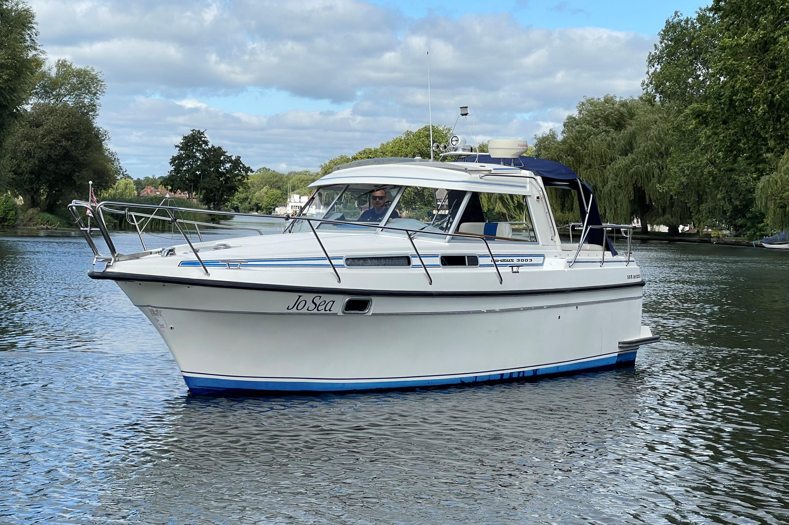

B-Atlas Boat Guide · NMBS-3003
Nimbus 3003 Aft-Cabin Coupé
1985–1992
The Nimbus 3003 is a Swedish aft-cabin coupe cruiser from the late 1980s and early 1990s. It combines a compact deep-V/planing hull, protected cockpit helm, single diesel shaft drive and unusually useful two-cabin accommodation for its length.

- LOA
- 30′ 2″ / 9.19 m
- LWL
- Unknown
- Beam
- 10′ 6″ / 3.2 m
- Draft
- 2′ 9″ / 0.84 m
- Hull behaviour
- Planing
- Fuel
- Diesel
- Propulsion
- Shaft
- Engine configuration
- Single Volvo Penta diesel inboard typical
- Boat family
- Express Cruiser
- Construction
- GRP hull, deck and superstructure with hard-chine form
Best for
- Couples wanting a compact traditional Scandinavian cruiser
- Inland and coastal cruising where protected helm comfort matters
- Buyers valuing an aft cabin in roughly 30 feet
Trade-offs
- Aft-cabin layout separates sleeping areas but constrains open-plan interior volume
- Older examples require careful inspection of original systems and window/deck sealing
- Planing-speed operation uses more fuel than displacement trawlers
Known concerns
- No model-specific concern has been promoted to B-Atlas’s evidence threshold. This does not mean the model has no age-, condition- or hull-specific risks.
Inspection focus
- Inspect window frames, deck fittings and cockpit enclosure for leaks
- Inspect diesel cooling, exhaust, shaft, stern gear and engine mounts
- Inspect fuel, water and holding tanks and hoses
- Review electrical and heating-system upgrades
- Confirm actual draft and bridge clearance on the individual boat
Continue researching
Related boat models
Cutwater C-26 Cruiser
30.33 ft · Semi-Displacement
Cruisers Yachts 3260 Esprit Open Interior / No Mid-Cabin
30.83 ft · Planing
Cruisers Yachts 3270 Esprit Mid-Cabin
30.83 ft · Planing
Bayliner 3058 Command Bridge Command Bridge Cruiser
31 ft · Planing
Hunt Yachts Surfhunter 29 Deep-V Express Cruiser
29.33 ft · Planing
Cutwater C-24 C Coupe
31.17 ft · Planing
About this record
B-Atlas preserves uncertainty: missing information remains unknown rather than being treated as a negative. Specifications and guidance describe the model record; individual boats can differ by year, equipment, refit and condition.